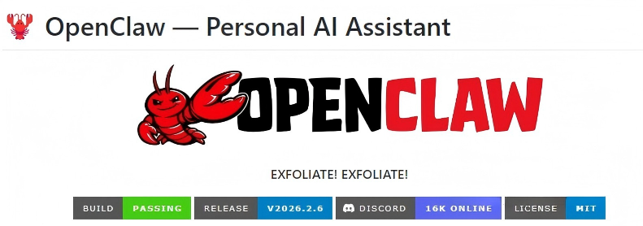
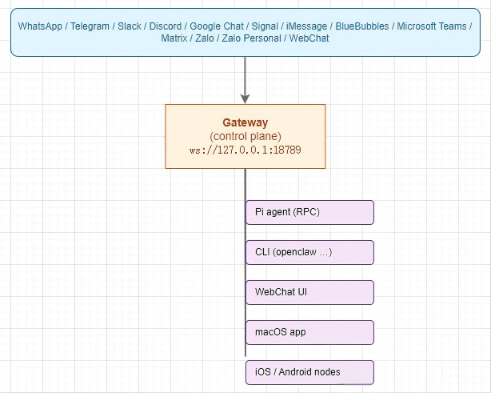

在构建企业级AI系统时，开发团队常陷入"入口爆炸"的困境：为每个终端单独开发接入层，导致系统碎片化、状态不一致、协同困难。OpenClaw通过创新的WebSocket控制平面架构，实现了跨终端AI交互的统一协调。本文将深入解析这一架构的设计理念、实现机制与工程价值。

一、控制平面与数据平面的架构分离
1.1 控制平面的核心职责
在OpenClaw架构中，控制平面与数据平面的分离是实现系统统一性的关键：
class ControlPlaneArchitecture:"""控制平面架构定义"""class ControlPlane:"""控制平面核心组件"""def __init__(self):# 会话与状态管理self.session_manager = SessionManager()# 路由与调度引擎self.routing_engine = RoutingEngine()# 权限与策略引擎self.policy_engine = PolicyEngine()# 事件分发系统self.event_distributor = EventDistributor()# 节点注册中心self.node_registry = NodeRegistry()class DataPlane:"""数据平面核心组件"""def __init__(self):# 模型推理服务self.model_inference = ModelInferenceService()# 工具执行引擎self.tool_execution = ToolExecutionEngine()# 多媒体处理self.media_processor = MediaProcessor()# 数据存储与检索self.data_storage = DataStorageService()
控制平面的核心职责：
会话生命周期管理：创建、维护、销毁会话上下文
状态同步协调：确保多终端状态一致性
消息路由分发：智能路由到目标节点
权限策略执行：访问控制与安全策略
事件广播分发：实时事件通知
数据平面的核心职责：
计算密集型任务执行
模型推理与流式生成
工具调用与系统操作
多媒体数据处理

二、WebSocket控制平面的技术选型依据
2.1 WebSocket协议的技术优势
OpenClaw选择WebSocket作为控制平面通信协议，基于以下技术考量：
class WebSocketAdvantageAnalysis:"""WebSocket技术优势分析"""ADVANTAGES = {"full_duplex": {"description": "全双工通信","technical_benefits": ["支持双向实时通信","消除请求-响应模式限制","实现真正的推送机制"],"ai_interaction_scenarios": ["模型流式输出","实时状态更新","多端协同操作"]},"low_latency": {"description": "低延迟连接","technical_benefits": ["连接建立后无HTTP开销","减少协议头开销","支持高频消息交换"],"ai_interaction_scenarios": ["实时打字指示器","任务进度同步","即时中断响应"]},"persistent_connection": {"description": "持久连接","technical_benefits": ["避免频繁连接建立","支持长时会话","状态保持能力"],"ai_interaction_scenarios": ["长时间任务执行","会话状态维持","实时监控与调试"]},"cross_platform": {"description": "跨平台一致性","technical_benefits": ["标准WebSocket协议","广泛客户端支持","统一通信接口"],"ai_interaction_scenarios": ["多终端统一接入","异构系统集成","标准化通信协议"]}}def compare_with_http(self) -> ComparisonResult:"""与HTTP协议对比分析"""return {"connection_model": {"websocket": "持久连接，双向通信","http": "短连接，请求-响应"},"latency": {"websocket": "低，连接复用","http": "高，每次请求建立连接"},"server_push": {"websocket": "原生支持","http": "需SSE/长轮询等补丁"},"state_management": {"websocket": "连接内状态保持","http": "无状态，需额外机制"},"ai_scenario_suitability": {"websocket": "高，适合实时交互","http": "中低，适合简单请求"}}
2.2 Gateway端点设计
OpenClaw Gateway提供标准化的WebSocket端点：
# Gateway端点配置websocket_endpoints:main_gateway:path: "/ws/v1"protocols: ["openclaw-v1"]authentication: "bearer_token"control_channel:path: "/ws/control"protocols: ["openclaw-control"]features: ["session_management", "node_registration"]data_channel:path: "/ws/data"protocols: ["openclaw-data"]features: ["streaming_output", "binary_data"]event_channel:path: "/ws/events"protocols: ["openclaw-events"]features: ["real_time_events", "broadcast"]
三、Gateway架构的三层核心组件
3.1 连接管理层（Connection Manager）
class ConnectionManager:"""连接管理器实现"""def __init__(self, config: ConnectionConfig):self.config = configself.connections = ConnectionPool()self.heartbeat_monitor = HeartbeatMonitor()self.reconnection_handler = ReconnectionHandler()async def handle_connection(self, websocket: WebSocket,node_info: NodeInfo) -> ConnectionHandle:"""处理新连接"""# 1. 连接认证auth_result = await self.authenticate_connection(websocket, node_info)if not auth_result.authenticated:raise AuthenticationError(auth_result.reason)# 2. 连接注册connection_id = self.generate_connection_id()connection = Connection(id=connection_id,websocket=websocket,node_info=node_info,created_at=datetime.now(),last_active=datetime.now())# 3. 加入连接池await self.connections.add(connection)# 4. 启动心跳检测await self.heartbeat_monitor.start_monitoring(connection)# 5. 返回连接句柄return ConnectionHandle(connection_id=connection_id,session_id=await self.create_session(connection),capabilities=node_info.capabilities)async def authenticate_connection(self, websocket: WebSocket,node_info: NodeInfo) -> AuthResult:"""连接认证"""# 1. Token验证if not await self.verify_auth_token(node_info.auth_token):return AuthResult(authenticated=False, reason="Invalid token")# 2. 节点能力验证if not self.validate_node_capabilities(node_info.capabilities):return AuthResult(authenticated=False, reason="Invalid capabilities")# 3. 并发连接限制检查if not await self.check_connection_limits(node_info.node_id):return AuthResult(authenticated=False, reason="Connection limit exceeded")return AuthResult(authenticated=True)def validate_node_capabilities(self, capabilities: List[str]) -> bool:"""验证节点能力声明"""valid_capabilities = {"chat": ["send_message", "receive_message"],"browser": ["automation", "screenshot", "dom_access"],"cli": ["exec", "file_io", "process_control"],"mobile": ["camera", "location", "notification"],"web": ["ui_rendering", "form_input", "navigation"]}# 验证每个声明能力是否在允许列表中for capability in capabilities:if capability not in valid_capabilities:return Falsereturn True
3.2 消息路由层（Message Router）
class MessageRouter:"""智能消息路由器"""def __init__(self, routing_config: RoutingConfig):self.config = routing_configself.routing_table = RoutingTable()self.priority_queue = PriorityMessageQueue()self.multicast_manager = MulticastManager()async def route_message(self, message: ControlMessage) -> RoutingResult:"""路由控制消息"""# 1. 消息验证validation_result = await self.validate_message(message)if not validation_result.valid:return RoutingResult.error(validation_result.errors)# 2. 路由决策routing_decision = await self.determine_routing(message)# 3. 优先级处理if message.priority != Priority.NORMAL:await self.priority_queue.enqueue(message, message.priority)# 4. 执行路由routing_results = []for target in routing_decision.targets:if routing_decision.delivery_mode == DeliveryMode.UNICAST:result = await self.route_unicast(message, target)routing_results.append(result)elif routing_decision.delivery_mode == DeliveryMode.MULTICAST:result = await self.route_multicast(message, target)routing_results.append(result)elif routing_decision.delivery_mode == DeliveryMode.BROADCAST:result = await self.route_broadcast(message, target)routing_results.append(result)return RoutingResult(success=all(r.success for r in routing_results),details=routing_results)async def determine_routing(self, message: ControlMessage) -> RoutingDecision:"""确定路由决策"""# 基于消息类型路由if message.namespace == "chat":return await self.route_chat_message(message)elif message.namespace == "agent":return await self.route_agent_message(message)elif message.namespace == "node":return await self.route_node_message(message)elif message.namespace == "browser":return await self.route_browser_message(message)else:return await self.route_system_message(message)async def route_chat_message(self, message: ControlMessage) -> RoutingDecision:"""路由聊天消息"""targets = []# 1. 发送者所在会话的所有参与者session_participants = await self.get_session_participants(message.session_id)targets.extend(session_participants)# 2. 需要处理此消息的Agentagent_targets = await self.find_agents_for_message(message)targets.extend(agent_targets)# 3. 需要监控此会话的管理员if message.requires_monitoring:admin_targets = await self.get_session_monitors(message.session_id)targets.extend(admin_targets)return RoutingDecision(targets=list(set(targets)), # 去重delivery_mode=DeliveryMode.MULTICAST,priority=message.priority)
3.3 状态协调器（State Coordinator）
class StateCoordinator:"""全局状态协调器"""def __init__(self, state_config: StateConfig):self.config = state_configself.global_state = GlobalStateStore()self.event_bus = EventBus()self.conflict_resolver = ConflictResolver()async def synchronize_state(self, session_id: str,state_update: StateUpdate) -> SyncResult:"""同步会话状态"""# 1. 获取当前状态current_state = await self.global_state.get_session_state(session_id)# 2. 冲突检测conflict_check = await self.detect_conflicts(current_state, state_update)if conflict_check.has_conflicts:# 3. 冲突解决resolved_update = await self.conflict_resolver.resolve(current_state, state_update, conflict_check.conflicts)else:resolved_update = state_update# 4. 应用状态更新await self.global_state.update_session_state(session_id, resolved_update)# 5. 发布状态变更事件await self.publish_state_change_event(session_id, resolved_update)return SyncResult(session_id=session_id,update_applied=True,conflicts_resolved=conflict_check.has_conflicts,new_state=await self.global_state.get_session_state(session_id))async def publish_state_change_event(self, session_id: str,update: StateUpdate) -> None:"""发布状态变更事件"""event = StateChangeEvent(session_id=session_id,update=update,timestamp=datetime.now(),source_node=update.source_node)# 发布到事件总线await self.event_bus.publish(f"session.{session_id}.state", event)# 广播给所有会话参与者participants = await self.get_session_participants(session_id)for participant in participants:if participant != update.source_node: # 不发送给源节点await self.send_state_update(participant, event)class StateChangeEvent:"""状态变更事件"""def __init__(self, session_id: str, update: StateUpdate,timestamp: datetime, source_node: str):self.event_id = str(uuid.uuid4())self.session_id = session_idself.update = updateself.timestamp = timestampself.source_node = source_nodeself.event_type = "state_change"def to_dict(self) -> dict:"""转换为字典格式"""return {"event_id": self.event_id,"session_id": self.session_id,"update": self.update.to_dict(),"timestamp": self.timestamp.isoformat(),"source_node": self.source_node,"event_type": self.event_type}
四、协议设计：JSON-RPC 2.0 + 命名空间
4.1 协议架构设计
class OpenClawProtocol:"""OpenClaw通信协议实现"""PROTOCOL_VERSION = "2.0"NAMESPACES = {"chat": "聊天相关操作","agent": "Agent控制与编排","node": "节点注册与管理","browser": "浏览器自动化","system": "系统级操作","debug": "调试与诊断"}class ProtocolMessage:"""协议消息基类"""def __init__(self, method: str, params: dict = None,id: str = None, namespace: str = None):self.jsonrpc = OpenClawProtocol.PROTOCOL_VERSIONself.method = methodself.params = params or {}self.id = id or str(uuid.uuid4())self.namespace = namespace or self.extract_namespace(method)def extract_namespace(self, method: str) -> str:"""从方法名提取命名空间"""if "." in method:return method.split(".")[0]return "system" # 默认命名空间def to_dict(self) -> dict:"""转换为字典格式"""return {"jsonrpc": self.jsonrpc,"method": self.method,"params": self.params,"id": self.id}class RequestMessage(ProtocolMessage):"""请求消息"""def __init__(self, method: str, params: dict = None,id: str = None, namespace: str = None):super().__init__(method, params, id, namespace)self.type = "request"class ResponseMessage:"""响应消息"""def __init__(self, request_id: str, result: dict = None,error: dict = None):self.jsonrpc = OpenClawProtocol.PROTOCOL_VERSIONself.id = request_idself.result = resultself.error = errorself.type = "response"def to_dict(self) -> dict:"""转换为字典格式"""response = {"jsonrpc": self.jsonrpc,"id": self.id}if self.error:response["error"] = self.errorelse:response["result"] = self.resultreturn responseclass EventMessage:"""事件消息"""def __init__(self, event: str, data: dict,session_id: str = None):self.jsonrpc = OpenClawProtocol.PROTOCOL_VERSIONself.method = "event.notify"self.params = {"event": event,"data": data,"session_id": session_id,"timestamp": datetime.now().isoformat()}self.type = "event"def to_dict(self) -> dict:"""转换为字典格式"""return {"jsonrpc": self.jsonrpc,"method": self.method,"params": self.params}
4.2 命名空间方法示例
# 聊天命名空间方法CHAT_METHODS = {"chat.sendMessage": {"description": "发送聊天消息","params": {"session_id": {"type": "string", "required": True},"content": {"type": "string", "required": True},"metadata": {"type": "object", "required": False}},"response": {"message_id": "string","timestamp": "string"}},"chat.startTyping": {"description": "开始输入指示","params": {"session_id": {"type": "string", "required": True}}},"chat.stopTyping": {"description": "停止输入指示","params": {"session_id": {"type": "string", "required": True}}}}# Agent命名空间方法AGENT_METHODS = {"agent.startTask": {"description": "启动Agent任务","params": {"task_id": {"type": "string", "required": True},"instructions": {"type": "string", "required": True},"tools": {"type": "array", "required": False}}},"agent.cancelTask": {"description": "取消Agent任务","params": {"task_id": {"type": "string", "required": True}}},"agent.getStatus": {"description": "获取Agent状态","params": {"task_id": {"type": "string", "required": True}}}}# 浏览器自动化命名空间方法BROWSER_METHODS = {"browser.navigate": {"description": "浏览器导航","params": {"url": {"type": "string", "required": True},"options": {"type": "object", "required": False}}},"browser.screenshot": {"description": "截取屏幕截图","params": {"selector": {"type": "string", "required": False},"full_page": {"type": "boolean", "required": False}}},"browser.executeScript": {"description": "执行JavaScript脚本","params": {"script": {"type": "string", "required": True},"args": {"type": "array", "required": False}}}}
（表1：协议命名空间与方法定义）
命名空间 | 核心方法 | 功能描述 | 使用场景 |
|---|---|---|---|
chat | sendMessage, startTyping, stopTyping | 聊天消息控制 | 实时对话，状态指示 |
agent | startTask, cancelTask, getStatus | Agent任务管理 | 自动化工作流，任务控制 |
node | register, heartbeat, updateCapabilities | 节点生命周期管理 | 设备注册，能力发现 |
browser | navigate, screenshot, executeScript | 浏览器自动化 | 网页操作，数据采集 |
system | ping, getStats, shutdown | 系统控制 | 健康检查，系统管理 |
五、节点能力模型与智能路由
5.1 节点能力注册
class NodeCapabilityModel:"""节点能力模型"""def __init__(self):self.capability_registry = CapabilityRegistry()class NodeCapabilities:"""节点能力定义"""def __init__(self, node_id: str, node_type: str):self.node_id = node_idself.node_type = node_typeself.capabilities = {}self.metadata = {}def add_capability(self, capability: str,details: dict = None) -> None:"""添加能力声明"""self.capabilities[capability] = {"enabled": True,"details": details or {},"registered_at": datetime.now().isoformat()}def get_capability_score(self, query: CapabilityQuery) -> float:"""计算能力匹配分数"""score = 0.0for required_cap in query.required_capabilities:if required_cap in self.capabilities:if self.capabilities[required_cap]["enabled"]:score += 1.0else:score += 0.2 # 能力存在但未启用else:# 检查是否有等价能力equivalent = self.find_equivalent_capability(required_cap)if equivalent:score += 0.7return score / max(1, len(query.required_capabilities))class CapabilityAwareRouter:"""能力感知路由器"""def __init__(self, capability_model: NodeCapabilityModel):self.capability_model = capability_modelself.node_index = NodeIndex()async def find_best_node(self, task: TaskSpecification) -> Optional[str]:"""查找最适合执行任务的节点"""# 1. 构建能力查询capability_query = self.build_capability_query(task)# 2. 查找可用节点candidate_nodes = await self.find_candidate_nodes(capability_query)if not candidate_nodes:return None# 3. 能力评分scored_nodes = []for node in candidate_nodes:capabilities = self.capability_model.get_node_capabilities(node.id)score = capabilities.get_capability_score(capability_query)# 考虑节点负载load_factor = await self.calculate_load_factor(node.id)adjusted_score = score * (1.0 - load_factor * 0.3)scored_nodes.append((node, adjusted_score))# 4. 选择最佳节点scored_nodes.sort(key=lambda x: x[1], reverse=True)return scored_nodes[0][0].id if scored_nodes else Nonedef build_capability_query(self, task: TaskSpecification) -> CapabilityQuery:"""构建能力查询"""required_capabilities = []# 根据任务类型确定所需能力if task.task_type == "browser_automation":required_capabilities.append("browser.control")if task.requires_screenshot:required_capabilities.append("browser.screenshot")elif task.task_type == "cli_execution":required_capabilities.append("cli.exec")if task.requires_file_access:required_capabilities.append("filesystem.access")elif task.task_type == "mobile_interaction":required_capabilities.append("mobile.input")if task.requires_location:required_capabilities.append("location.access")return CapabilityQuery(required_capabilities=required_capabilities,preferred_node_types=task.preferred_node_types,capability_constraints=task.capability_constraints)
5.2 节点类型与能力映射
# 节点类型能力映射表NODE_CAPABILITY_MATRIX = {"cli_node": {"capabilities": ["exec", # 命令执行"file_read", # 文件读取"file_write", # 文件写入"process_control", # 进程控制"network_access" # 网络访问],"limitations": ["no_gui", # 无图形界面"limited_media" # 媒体处理有限],"typical_use_cases": ["server_automation","devops_tasks","batch_processing"]},"web_browser_node": {"capabilities": ["browser.automation", # 浏览器自动化"dom.access", # DOM访问"screenshot", # 截图"javascript_execution", # JS执行"form_interaction" # 表单交互],"limitations": ["requires_browser", # 需要浏览器"performance_heavy" # 性能消耗大],"typical_use_cases": ["web_scraping","ui_testing","form_filling"]},"mobile_node": {"capabilities": ["camera.access", # 相机访问"location.access", # 定位访问"notification", # 通知"sensor_data", # 传感器数据"touch_input" # 触摸输入],"limitations": ["battery_constrained", # 电池限制"network_unstable" # 网络不稳定],"typical_use_cases": ["mobile_testing","location_based_services","media_capture"]},"desktop_node": {"capabilities": ["gui_automation", # GUI自动化"window_management", # 窗口管理"clipboard_access", # 剪贴板访问"keyboard_input", # 键盘输入"mouse_control" # 鼠标控制],"limitations": ["platform_specific", # 平台特定"requires_gui_session" # 需要GUI会话],"typical_use_cases": ["desktop_app_testing","workflow_automation","legacy_system_integration"]}}
六、多终端适配与状态同步
6.1 CLI终端适配器
class CLITerminalAdapter:"""CLI终端适配器"""def __init__(self, websocket_client: WebSocketClient):self.ws_client = websocket_clientself.session_id = Noneself.input_handler = InputHandler()self.output_renderer = OutputRenderer()async def start_interactive_session(self) -> None:"""启动交互式会话"""# 1. 建立WebSocket连接await self.ws_client.connect()# 2. 注册为CLI节点await self.register_cli_node()# 3. 创建新会话self.session_id = await self.create_session()# 4. 启动输入监听asyncio.create_task(self.listen_for_input())# 5. 启动输出处理asyncio.create_task(self.process_output_stream())async def listen_for_input(self) -> None:"""监听用户输入"""while True:try:# 读取用户输入user_input = await self.input_handler.read_input()if user_input.strip() == "/exit":break# 发送聊天消息await self.send_chat_message(user_input)# 显示输入指示await self.show_typing_indicator()except KeyboardInterrupt:# 处理Ctrl+C中断await self.handle_interrupt()except EOFError:breakasync def process_output_stream(self) -> None:"""处理输出流"""async for message in self.ws_client.message_stream():if message.type == "chat.message":await self.render_message(message)elif message.type == "agent.progress":await self.render_progress(message)elif message.type == "system.event":await self.handle_system_event(message)elif message.type == "stream.token":await self.render_stream_token(message)async def handle_interrupt(self) -> None:"""处理中断信号"""# 发送中断请求interrupt_request = {"jsonrpc": "2.0","method": "agent.cancelTask","params": {"session_id": self.session_id,"reason": "user_interrupt"}}await self.ws_client.send(interrupt_request)
6.2 Web终端适配器
class WebTerminalAdapter:"""Web终端适配器"""def __init__(self, ws_endpoint: str, ui_framework: UIFramework):self.ws_endpoint = ws_endpointself.ui = ui_frameworkself.reconnection_manager = ReconnectionManager()self.message_queue = MessageQueue()async def initialize(self) -> None:"""初始化Web终端"""# 1. 建立WebSocket连接await self.connect_websocket()# 2. 初始化UI组件await self.initialize_ui_components()# 3. 设置事件处理器await self.setup_event_handlers()# 4. 启动重连监控await self.reconnection_manager.start_monitoring()async def connect_websocket(self) -> None:"""连接WebSocket"""try:self.websocket = await websockets.connect(self.ws_endpoint)# 设置消息处理器asyncio.create_task(self.handle_incoming_messages())# 发送连接就绪事件await self.send_ready_event()except Exception as e:logger.error(f"WebSocket连接失败: {e}")await self.reconnection_manager.schedule_reconnect()async def handle_incoming_messages(self) -> None:"""处理入站消息"""try:async for message in self.websocket:parsed_message = json.loads(message)await self.process_message(parsed_message)except websockets.exceptions.ConnectionClosed:await self.handle_connection_closed()except Exception as e:logger.error(f"消息处理错误: {e}")async def process_message(self, message: dict) -> None:"""处理消息"""message_type = message.get("type")if message_type == "chat.message":await self.render_chat_message(message)elif message_type == "agent.stream":await self.render_agent_stream(message)elif message_type == "typing.indicator":await self.update_typing_indicator(message)elif message_type == "task.progress":await self.update_progress_indicator(message)elif message_type == "browser.screenshot":await self.render_screenshot(message)elif message_type == "system.alert":await self.show_system_alert(message)async def handle_connection_closed(self) -> None:"""处理连接关闭"""# 显示连接状态await self.show_connection_status("disconnected")# 尝试重新连接await self.reconnection_manager.attempt_reconnect()# 队列未发送的消息await self.message_queue.persist_unsent_messages()
6.3 移动终端适配器
class MobileTerminalAdapter:"""移动终端适配器"""def __init__(self, platform: str, device_info: DeviceInfo):self.platform = platformself.device_info = device_infoself.network_monitor = NetworkMonitor()self.background_task_manager = BackgroundTaskManager()async def initialize_mobile_session(self) -> None:"""初始化移动会话"""# 1. 检查网络连接if not await self.network_monitor.check_connectivity():raise NetworkUnavailableError("No network connection")# 2. 建立WebSocket连接await self.establish_websocket_connection()# 3. 注册移动设备能力await self.register_mobile_capabilities()# 4. 设置后台任务处理await self.setup_background_handling()# 5. 启动网络状态监控await self.start_network_monitoring()async def establish_websocket_connection(self) -> None:"""建立WebSocket连接"""# 根据网络类型调整连接参数connection_params = self.get_connection_params()try:self.websocket = await websockets.connect(self.ws_endpoint,**connection_params)# 设置连接状态回调self.websocket.on_connection_state_change = self.handle_connection_state_changeexcept Exception as e:logger.error(f"移动端连接失败: {e}")await self.handle_connection_failure(e)def get_connection_params(self) -> dict:"""获取连接参数"""params = {"ping_interval": 30,"ping_timeout": 10,"close_timeout": 5,"max_size": 2**20 # 1MB}# 根据网络类型调整network_type = self.network_monitor.get_network_type()if network_type == "cellular":params.update({"ping_interval": 60, # 更长的ping间隔"max_size": 512 * 1024, # 限制消息大小})elif network_type == "wifi":params.update({"ping_interval": 30,"max_size": 2**20,})return paramsasync def handle_connection_state_change(self, new_state: str) -> None:"""处理连接状态变化"""if new_state == "disconnected":# 进入后台模式await self.enter_background_mode()elif new_state == "connected":# 恢复前台模式await self.enter_foreground_mode()async def enter_background_mode(self) -> None:"""进入后台模式"""# 1. 暂停非必要任务await self.background_task_manager.pause_non_essential()# 2. 切换到低功耗模式await self.switch_to_low_power_mode()# 3. 持久化当前状态await self.persist_current_state()async def register_mobile_capabilities(self) -> None:"""注册移动设备能力"""capabilities = {"platform": self.platform,"device_model": self.device_info.model,"os_version": self.device_info.os_version,"available_capabilities": self.get_available_capabilities()}registration_request = {"jsonrpc": "2.0","method": "node.register","params": {"node_type": "mobile","capabilities": capabilities,"metadata": self.device_info.metadata}}await self.websocket.send(json.dumps(registration_request))
（表2：多终端适配特性对比）
特性维度 | CLI终端 | Web终端 | 移动终端 | 桌面终端 |
|---|---|---|---|---|
连接稳定性 | 高 | 中 | 低 | 高 |
输入方式 | 命令行 | 表单/文本 | 触摸/语音 | 键盘/鼠标 |
输出渲染 | 文本流 | 富文本/图 | 响应式UI | 原生UI |
网络适应 | 强 | 中 | 自动切换 | 强 |
后台运行 | 支持 | 有限 | 系统管理 | 支持 |
权限访问 | 系统级 | 浏览器限制 | 设备API | 系统级 |
七、消息通道统一与协议转换
7.1 统一消息格式
class UnifiedMessageFormat:"""统一消息格式"""MESSAGE_SCHEMA = {"type": "object","required": ["id", "type", "channel", "payload"],"properties": {"id": {"type": "string","description": "消息唯一标识"},"type": {"type": "string","enum": ["request", "response", "event"],"description": "消息类型"},"channel": {"type": "string","enum": ["cli", "web", "mobile", "desktop", "browser"],"description": "消息来源通道"},"payload": {"type": "object","description": "消息负载"},"metadata": {"type": "object","properties": {"timestamp": {"type": "string"},"source": {"type": "string"},"correlation_id": {"type": "string"},"priority": {"type": "integer"}}}}}class UnifiedMessage:"""统一消息封装"""def __init__(self, message_type: str, channel: str,payload: dict, metadata: dict = None):self.id = str(uuid.uuid4())self.type = message_typeself.channel = channelself.payload = payloadself.metadata = metadata or {}self.metadata.update({"timestamp": datetime.now().isoformat()})def to_dict(self) -> dict:"""转换为字典格式"""return {"id": self.id,"type": self.type,"channel": self.channel,"payload": self.payload,"metadata": self.metadata}class MessageConverter:"""消息转换器"""def convert_from_external(self, external_message: dict,channel_type: str) -> UnifiedMessage:"""从外部格式转换"""if channel_type == "telegram":return self.convert_telegram_message(external_message)elif channel_type == "slack":return self.convert_slack_message(external_message)elif channel_type == "whatsapp":return self.convert_whatsapp_message(external_message)elif channel_type == "wechat":return self.convert_wechat_message(external_message)else:return self.convert_generic_message(external_message)def convert_telegram_message(self, tg_message: dict) -> UnifiedMessage:"""转换Telegram消息"""return UnifiedMessage(message_type="request",channel="telegram",payload={"text": tg_message.get("text", ""),"chat_id": tg_message.get("chat", {}).get("id"),"user_id": tg_message.get("from", {}).get("id"),"message_id": tg_message.get("message_id")},metadata={"platform": "telegram","update_id": tg_message.get("update_id")})
7.2 协议版本管理与兼容性
class ProtocolVersionManager:"""协议版本管理器"""def __init__(self):self.supported_versions = ["1.0", "2.0", "2.1"]self.current_version = "2.1"self.version_mappings = self.load_version_mappings()def load_version_mappings(self) -> dict:"""加载版本映射"""return {"1.0": {"chat.sendMessage": "chat.send","agent.startTask": "agent.start"},"2.0": {"chat.send": "chat.sendMessage","agent.start": "agent.startTask"},"2.1": {# 2.1与2.0兼容}}async def handle_version_negotiation(self, client_version: str) -> str:"""处理版本协商"""if client_version in self.supported_versions:return client_versionelse:# 寻找兼容版本compatible_version = self.find_compatible_version(client_version)if compatible_version:return compatible_versionelse:return self.current_versiondef translate_message(self, message: dict,from_version: str,to_version: str) -> dict:"""翻译消息到目标版本"""if from_version == to_version:return message# 获取转换映射method_mapping = self.get_method_mapping(from_version, to_version)# 转换方法名original_method = message.get("method")if original_method in method_mapping:message["method"] = method_mapping[original_method]# 转换参数格式if "params" in message:message["params"] = self.translate_params(message["params"], from_version, to_version)return message
八、安全与治理机制
8.1 多层次安全模型
class SecurityModel:"""安全模型实现"""SECURITY_MODES = {"local_only": {"description": "仅本地访问","authentication": "none","encryption": "optional","network_access": "loopback_only"},"token_based": {"description": "令牌认证","authentication": "bearer_token","encryption": "recommended","network_access": "authenticated_only"},"tailscale": {"description": "Tailscale网络","authentication": "tailscale_auth","encryption": "required","network_access": "tailscale_network"},"zero_trust": {"description": "零信任模型","authentication": "mfa_required","encryption": "required","network_access": "least_privilege"}}class AuthenticationManager:"""认证管理器"""async def authenticate_connection(self, websocket: WebSocket,auth_info: dict) -> AuthResult:"""认证连接"""auth_mode = auth_info.get("mode", "token_based")if auth_mode == "local_only":return await self.authenticate_local(websocket)elif auth_mode == "token_based":return await self.authenticate_token(auth_info.get("token"))elif auth_mode == "tailscale":return await self.authenticate_tailscale(auth_info)elif auth_mode == "zero_trust":return await self.authenticate_zero_trust(auth_info)else:return AuthResult(authenticated=False,reason="Unsupported auth mode")async def authenticate_token(self, token: str) -> AuthResult:"""令牌认证"""# 验证令牌有效性token_info = await self.token_store.validate_token(token)if not token_info.valid:return AuthResult(authenticated=False,reason="Invalid token")# 检查令牌权限permissions = self.get_token_permissions(token_info)return AuthResult(authenticated=True,user_id=token_info.user_id,permissions=permissions,expires_at=token_info.expires_at)
8.2 可观测性体系
class ObservabilitySystem:"""可观测性系统"""def __init__(self):self.metrics_collector = MetricsCollector()self.tracing_system = TracingSystem()self.logging_system = StructuredLogging()self.alert_manager = AlertManager()async def instrument_gateway(self, gateway: Gateway) -> None:"""仪表化Gateway"""# 1. 指标收集await self.metrics_collector.register_gateway_metrics(gateway)# 2. 分布式追踪await self.tracing_system.instrument_websocket_handlers(gateway)# 3. 结构化日志await self.logging_system.configure_gateway_logging(gateway)# 4. 告警规则await self.alert_manager.setup_gateway_alerts(gateway)class GatewayMetrics:"""Gateway指标定义"""METRICS = {"connections_active": {"type": "gauge","help": "当前活跃连接数","labels": ["node_type", "version"]},"messages_processed_total": {"type": "counter","help": "处理的消息总数","labels": ["message_type", "result"]},"message_processing_duration_seconds": {"type": "histogram","help": "消息处理耗时","labels": ["message_type"]},"sessions_active": {"type": "gauge","help": "活跃会话数","labels": ["session_type"]},"routing_decisions_total": {"type": "counter","help": "路由决策总数","labels": ["decision_type", "success"]},"node_registrations_total": {"type": "counter","help": "节点注册总数","labels": ["node_type", "result"]}}
九、扩展性与演进
9.1 插件化扩展机制
class PluginSystem:"""插件化扩展系统"""def __init__(self, gateway: Gateway):self.gateway = gatewayself.plugin_registry = PluginRegistry()self.extension_points = self.define_extension_points()def define_extension_points(self) -> dict:"""定义扩展点"""return {"message_interceptors": {"description": "消息拦截器","interface": "MessageInterceptor","execution_order": "pre_processing"},"routing_strategies": {"description": "路由策略","interface": "RoutingStrategy","execution_order": "routing_decision"},"authentication_providers": {"description": "认证提供者","interface": "AuthenticationProvider","execution_order": "authentication"},"event_handlers": {"description": "事件处理器","interface": "EventHandler","execution_order": "post_processing"},"node_capability_providers": {"description": "节点能力提供者","interface": "CapabilityProvider","execution_order": "node_registration"}}async def load_plugin(self, plugin_path: str) -> PluginInfo:"""加载插件"""# 1. 验证插件validation_result = await self.validate_plugin(plugin_path)if not validation_result.valid:raise PluginValidationError(validation_result.errors)# 2. 加载插件模块plugin_module = self.load_plugin_module(plugin_path)# 3. 注册到扩展点plugin_info = await self.register_to_extension_points(plugin_module)# 4. 初始化插件await plugin_info.plugin.initialize(self.gateway)return plugin_infoclass MessageInterceptorPlugin:"""消息拦截器插件示例"""def __init__(self, config: dict):self.config = configself.patterns = config.get("patterns", [])async def intercept(self, message: dict, context: dict) -> InterceptResult:"""拦截消息"""# 检查是否匹配拦截模式for pattern in self.patterns:if self.matches_pattern(message, pattern):if pattern.get("action") == "block":return InterceptResult(intercepted=True,action="block",reason=pattern.get("reason"))elif pattern.get("action") == "modify":modified_message = self.modify_message(message, pattern)return InterceptResult(intercepted=True,action="modify",modified_message=modified_message)return InterceptResult(intercepted=False)
十、总结
OpenClaw的WebSocket控制平面架构代表了一种AI系统架构的范式转变：从多入口碎片化系统转向统一协调的智能中枢。这种架构的核心价值体现在：
统一控制平面：通过WebSocket Gateway实现多终端统一接入与协调
状态一致性：全局状态管理与同步，确保多端体验一致
能力感知路由：智能路由到具备相应能力的节点
协议标准化：JSON-RPC 2.0 + 命名空间提供清晰演进路径
安全可观测：多层次安全模型与完整可观测性支持
实施建议：
从单一终端开始，验证控制平面基础能力
逐步扩展终端支持，保持向后兼容
建立完善的监控与调试工具
设计清晰的扩展接口，支持生态演进
注重安全与治理，为生产部署做好准备
随着AI系统复杂度的增加，控制平面的重要性将日益凸显。OpenClaw的架构实践为构建下一代智能系统提供了有价值的参考：不是增加更多独立的AI入口，而是建立一个统一、协调、可扩展的AI交互中枢。